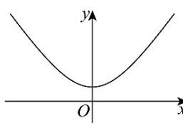
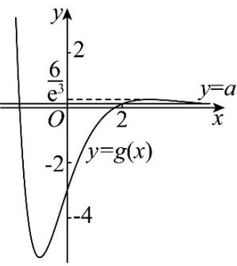

单选题：ACDCBCBA；多选题：ABC，ACD，AD 填空题： \((0,1)\) ， \(\left[0,\frac{1}{3}\right)\) ，(0,6)
1. A 由 \(f(x)=2f'(1)\ln x+\frac{1}{x}\) 可得 \(f'(x)=2f'(1)\frac{1}{x}-\frac{1}{x^{2}}\) 故 \(f'(1)=2f'(1)-1\) ，解得 \(f'(1)=1\) 2. C 由题意得 \(f'(x)=-\sin x+a\geq0\) 在 R 上恒成立，
则 \(a\geq\sin x\) ，因为 \(\sin x\in[-1,1]\) ，则 \(a\geq1\) .
3. D 对函数 \(y = x \ln x\) 求导得 \(y' = \ln x + 1\) ，故所求切线斜率为 \(k = \ln 1 + 1 = 1\) ，切点坐标为 \((1,0)\) ，所以，曲线 \(y = x \ln x\) 在 x = 1 处的切线方程为 y = x - 1，该切线交 x 轴于点 \((1,0)\) ，交 y 轴于点 \((0,-1)\) ，因此，曲线 \(y=x\ln x\) 在 x=1 处的切线与两坐标轴所围成的三角形的\(y = x \ln x\) 在 \(x = 1\) 处的切线与两坐标轴所围成的三角形的面积为 \(\frac{1}{2} \times 1^{2} = \frac{1}{2}\) .
4. C 对应 \(f(x) = x - \sin x\) ，有 \(f'(x) = 1 - \cos x \geq 0\) ，故 \(f(x)\) 在 R 上单调递增，若 \(f(x) = x - \sin x < f(0) = 0\) ，即 \(x < 0\) ，所以 “ \(x - \sin x < 0\) ” 是 “ \(x < 0\) ” 的充要条件.
5. B 观察图象知，当 \(x < 0\) 时， \(f(x)\) 先单调递减，再单调递增，则 \(f'(x)\) 先为负数，再为正数，在当 \(x > 0\) 时， \(f(x)\) 先单调递增，再单调递减，最后单调递增，所以 \(f'(x)\) 先为正数，再为负数，最后为正数，故只有 B 符合.
6. C 由题意可得 \(f'(x) = \frac{2e^{2x}}{e^{2x} + 1} - 1 = \frac{e^{2x} - 1}{e^{2x} + 1}\) ，令
\(f'(x)=0\) 解得 x=0 ，当 x<0 时 \(f'(x)<0,\quad f(x)\) 单调递减， 当 x>0 时 \(f'(x)>0,\quad f(x)\)

\(f(-x) = \ln \left(\frac{1}{\mathrm{e}^{2x}} + 1\right) + x = \ln \left(\frac{1 + \mathrm{e}^{2x}}{\mathrm{e}^{2x}}\right) + x = \ln \left(1 + \mathrm{e}^{2x}\right) - x\) 所以 \(f(x)\) 为偶函数，大致图象如下，若 \(x \in [1,2]\) 时，关于 \(x\) 的不等式 \(f(2x + 1) < f(x + a)\) 恒成立，则 \(\left|2x + 1\right| < \left|x + a\right|\) 对 \(x \in [1,2]\) 恒成立，所以 \(\left|x + a\right| > 2x + 1\) 则 \(x + a > 2x + 1\) 或 \(x + a < -2x - 1\) ，所以 \(a > x + 1\) 或 \(a < -3x - 1\) 对 \(x \in [1,2]\) 恒成立，所以 \(a > (x + 1)_{\max} = 3\) 或 \(a < (-3x - 1)_{\min} = -7\) ，所以实数 \(a\) 的取值范围为 \((- \infty, -7) \cup (3, + \infty)\) 7. B令 \(g(x) = \mathrm{e}^{2x}f(x)\) ，则
\(g'(x)=\mathrm{e}^{2x}f'(x)+2\mathrm{e}^{2x}f(x)=\mathrm{e}^{2x}\left[f'(x)+2f(x)\right]\) , 又 \(f'(x)+2f(x)<0,\quad\mathrm{e}^{2x}>0\) ，所以 \(g'(x)<0\) ，即 \(g(x)=\mathrm{e}^{2x}f(x)_{\text{在}}(-\infty,+\infty)\) 上单调递减，对于 A，因为 \(g(-1)=\mathrm{e}^{-2}f(-1)>g(0)=f(0)=1\) ，所以 \(f(-1)>\mathrm{e}^{2}\) ，故 A 错误；对于 B，因为 \(g(0)=f(0)=1>g(1)=\mathrm{e}^{2}f(1)\) ，所以 \(f(1)<\frac{1}{\mathrm{e}^{2}}\) ，故 B 正确；对于 C，因为 \(g(0)=f(0)=1>g\left(\frac{1}{2}\right)=\mathrm{e}f\left(\frac{1}{2}\right)\) ，所以 \(f\left(\frac{1}{2}\right)<\frac{1}{\mathrm{e}}\) 故 C 错误；对于 D， 所以 \(\mathrm{e}f(1)<f\left(\frac{1}{2}\right)\) ，故 D 错误
8. A 令 \(f(x)=0\) ，即得 \(ae^{x}-x^{2}+3=0\) ，即 \(a=\frac{x^{2}-3}{e^{x}}\) 方程有三个零点，
即直线 y=a 与曲线 \(g(x)=\frac{x^{2}-3}{e^{x}}\) 有三个不同的

交点，可得 \(g'(x)=\frac{2x-x^{2}+3}{\mathrm{e}^{x}}=-\frac{x^{2}-2x-3}{\mathrm{e}^{x}}=-\frac{(x+1)(x-3)}{\mathrm{e}^{x}}\) 所以当 \(x\in(-\infty,-1)\) 或 \(x\in(3,+\infty)\) 时， \(g'(x)<0\) \(g(x)_{单调递减；当}x\in(-1,3)_{时，}g'(x)>0,\quad g(x)_{单调递增，所以当}x=-1_{时，}g(x)_{有极小值为}\) \(g(x)=-2e\) ，当 x=3 时， \(g(x)_{有极大值为}\) \(g(x)=\frac{6}{e^{3}}\) 当 \(x\to+\infty\) 时， \(g(x)\to0\) ，且当 \(|x|\geq\sqrt{3}\) 时， \(g(x)>0\) 所以作出函数 \(g(x)=\frac{x^{2}-3}{e^{x}}\) 的图象如图所示，所以数形结合可知 \(0<a<\frac{6}{e^{3}}\) ，即实数 a 的取值范围为 \(\left(0,\frac{6}{e^{3}}\right)\) 9. ABC 对 A, \((4)^{'}=0\) , 故 A 错误；对 B, \((\ln x)^{'}=\frac{1}{x}\) ，故 B 错误； 对 C, \((3^{x})^{' }=\ln3\cdot3^{x}\) ，故 C 错误；对 D, \((x^{5})^{' }=5x^{4}\) 故 D 正确.
10. ACD 将 \((1,1)\) 代入 C 的方程，等式成立，故 A 正确；
对于 C 在 x 轴上方的部分，可知函数
\(f(x)=\sqrt{x^{3}-2x+2}\) ，则 \(f'(x)=\frac{1}{2}(x^{3}-2x+2)^{\frac{1}{2}}(3x^{2}-2)\) ，因为 \(f'(1)=\frac{1}{2}\neq0\) ，故B错误；过点 \((1,1)\) 作C的切线，由B知其斜率为 \(\frac{1}{2}\) ，故其方程为 \(y=\frac{1}{2}x+\frac{1}{2}\) ，将其与C的方程联立 \(\left\{\begin{aligned}y&=\frac{1}{2}x+\frac{1}{2}\\ y^{2}&=x^{3}-2x+2\end{aligned}\right.\) 得 \((x-1)^{2}\left(x+\frac{7}{4}\right)=0\) ，故切线与C的交点的坐标 \(\left(-\frac{7}{4},-\frac{3}{8}\right)\) ，横，纵坐标均为有理数，故C正确；设 \((x_{0},y_{0}),x_{0}<0\) ，则其到坐标原点O的距离为 \(\sqrt{x_{0}^{2}+y_{0}^{2}}=\sqrt{x_{0}^{3}+x_{0}^{2}-2x_{0}+2}\) ，要使该距离大于 \(\sqrt{2}\) ，只需要 \(x_{0}^{3}+x_{0}^{2}-2x_{0}>0\) ，整理得 \(x_{0}(x_{0}^{2}+x_{0}-2)=x_{0}(x_{0}+2)\cdot(x_{0}-1)\) ，易知当 \(x_{0}=-2\) 时， \(y_{0}\) 不存在，可知 \(x_{0}>-2\Rightarrow x_{0}+2>0\) ，又因为 \(x_{0}(x_{0}-1)>0\) ，故 \(x_{0}(x_{0}+2)(x_{0}-1)>0\) ，故 \(x_{0}^{3}+x_{0}^{2}-2x_{0}>0\) 成立，故D正确.
11. ADA， \(y=\sin 2x\) 的最小正周期为 \(\pi\) ， \(y=\sin x\) 的最小正周期为 \(2\pi\) ，两者的最小公倍数为 \(2\pi\) ，故 \(f(x)\) 的最小正周期为 \(2\pi\) ，A正确；
B， \(f(\pi-x)=\sin(2\pi-2x)-2\sin(\pi-x)=-\sin 2x-2\sin x\) ，故曲线 \(y=f(x)\) 不关于直线 \(x=\frac{\pi}{2}\) 对称，B错误；
C， \(f(x)=\sin 2x-2\sin x=2\sin x\cos x-2\sin x=2\sin x(\cos x)\) 令 \(f(x)=0\) 得 \(2\sin x(\cos x-1)=0\) ，故 \(\sin x=0\) 或 \(\cos x=1\) ，因为 \(x\in[-2\pi,2\pi]\) ，所以 \(\sin x=0\) 的解为 \(x_{1}=-2\pi,\quad x_{2}=-\pi,\quad x_{3}=0,\quad x_{4}=\pi,\quad x_{5}=2\pi,\) \(\cos x=1\) 的解为 \(x_{1}=-2\pi,\quad x_{3}=0,\quad x_{5}=2\pi,\) 综上， \(f(x)\) 在区间 \([-2\pi,2\pi]\) 上有5个零点，C错误；
D， \(f'(x)=2\cos 2x-2\cos x=4\cos^{2}x-2-2\cos x=4(\cos x-1)^{2}\) 当 \(x\in\left(\frac{\pi}{3},\frac{2\pi}{3}\right)\) 时， \(\cos x\in\left(-\frac{1}{2},\frac{1}{2}\right)\)
\(4\left(\cos x-\frac{1}{4}\right)^{2}-\frac{9}{4}\in\left[-\frac{9}{4},0\right)\) ，即 \(f'(x)=4\left(\cos x-\frac{1}{4}\right)^{2}-\frac{9}{4}<0\) ，所以 \(f(x)\) 在 \(\left(\frac{\pi}{3},\frac{2\pi}{3}\right)\) 内单调递减，D正确 \(\boxed{12.}\) \((0,1)\because f'(x)=x-\frac{1}{x}=\frac{x^{2}-1}{x}=\frac{(x+1)(x-1)}{x}\) ，
x>0，由 \(f'(x)<0\) ，即 \((x+1)(x-1)<0\) ，解得 \(-1<x<1\) ，∵x>0，∴0<x<1，即函数的单调减区间为 \((0,1)\) \(\boxed{13.}\) \(\left[0,\frac{1}{3}\right)_{函数}f(x)=x+\frac{4}{x}+3\ln x\) 的定义域为 \((0,+\infty)\) ， \(f'(x)=1-\frac{4}{x^{2}}+\frac{3}{x}=\frac{x^{2}+3x-4}{x^{2}}=\frac{(x+4)(x-1)}{x^{2}}\Rightarrow f'(x)=0\) 或-4（舍去），当0<x<1时 \(f'(x)<0\) ，当x>1时 \(f'(x)>0\) ，所以 \(f(x)_{在}(0,1)_{上单调递减，在}(1,+\infty)\)
\[\text {所以} f (x) _ {\text {在}} x = 1\]
值，又因为函数 \(f(x)\) 在 \((a,2-3a)\) 内有最小值，故 \(0 \leq a < 1 < 2 - 3a\) ，解得 \(0 \leq a < \frac{1}{3}\) .
[14.] (0,6) 由方程 \(f(a) = f(-a)\) ，则当 \(a > 0\) 时，可得 \(6\ln a = ma^2 - 6a\) ；当 \(a < 0\) 时，可得 \(6\ln(-a) = ma^2 + 6a\) ，则可得关于 \(x\) 的方程 \(6\ln x = mx^2 - 6x\) 有两个不等的正根，关于 \(x\) 的方程 \(6\ln(-x) = mx^2 + 6x\) 有两个不等的负根，即函数 \(h(x) = 6\ln x - mx^2 + 6x\) 恰好有两个零点，函数 \(g(x) = 6\ln(-x) - mx^2 - 6x\) 恰好有两个零点，由 \(g(x) = h(-x)\) ，则只需研究函数 \(h(x) = 6\ln x - mx^2 + 6x\) 恰好有两个零点即可，求导可得 \(h'(x) = \frac{6}{x} - 2mx + 6 = -\frac{2mx^2 - 6x - 6}{x}\) ，令 \(g(x) = 2mx^2 - 6x - 6(x > 0)\) ，因为 \(2m > 0\) ，且 \(g(0) = -6 < 0, x = \frac{3}{2m} > 0\) ，所以 \(g(x)\) 在 \((0, +\infty)\) 上有一个零点，记为 \(x_0\) . 当 \(x \in (0, x_0)\) 时， \(g(x) < 0\) ， \(h'(x) > 0\) ; 当 \(x \in (x_0, +\infty)\) 时， \(g(x) > 0\) ， \(h'(x) < 0\) . 所以 \(h(x)\) 在 \((0, x_0)\) 上单调递增，在 \((x_0, +\infty)\) 上单调递减， 当 \(x \to 0\) 或 \(x \to +\infty\) 时， \(h(x) < 0\) ，则 \(h(x_0) > 0\) ，即
\(6\ln x_{0}-mx_{0}^{2}+6x_{0}>0\) ．因为 \(g(x_{0})=2mx_{0}^{2}-6x_{0}-6=0\) ，所以 \(mx_{0}^{2}=3x_{0}+3\) ，则 \(2\ln x_{0}+x_{0}-1>0\) ．因为函数 \(t(x)=2\ln x+x-1\) 在 \((0,+\infty)\) 上单调递增，且 \(t(1)=0\) ，所以 \(x_{0}>1\) ，则 \(0<\frac{1}{x_{0}}<1\) ，由 \(2mx_{0}^{2}-6x_{0}-6=0\) ，得 \(m=3\left(\frac{1}{x_{0}}\right)^{2}+\frac{3}{x_{0}}=3\left(\frac{1}{x_{0}}+\frac{1}{2}\right)^{2}-\frac{3}{4}\) ，又 \(0<\frac{1}{x_{0}}<1\) ，所以0<m<6.
15. （1）证明见解析；（I）单调递增区间为 \((-∞,-4)\) 。 \((-2,+∞)\) ，单调递减区间为 \((-4,-2)\) ，(II) \(a\leq-\frac{19}{4}\) （1）构造函数 \(h(x)=e^{x}-ex\) ， \(h'(x)=e^{x}-e\) ，
令 \(h'(x)=0\) ，得x=1，列表如下：
| x | (-∞,0) | 1 | (1,+∞) |
| h'(x) | - | 0 | + |
| h(x) | 递减 | 极小值 | 递增 |
所以 \(h(x) \geq h(1) = 0\) ，即有 \(e^{x} \geq ex\) 成立. （2）（I）当a=4时， \(f(x)=\left(x^{2}+4x+4\right)e^{x}\) ，所以 \(f'(x)=(2x+4)e^{x}+(x^{2}+4x+4)e^{x}=(x^{2}+6x+8)e^{x}\) 令 \(f'(x)=0\) ，因为 \(e^{x}>0\) ，所以 \(x^{2}+6x+8=0\) ，解得 x=-4 或 x=-2。列表如下：
| x | (-∞,-4) | -4 | (-4,-2) | -2 | (-2,+∞) |
| f'(x) | + | 0 | - | 0 | + |
| f(x) | ↗ | 极大值 | ↘ | 极小值 | ↗ |
由表可知，函数 \(f(x)\) 的单调递增区间为 \((- \infty, -4)\) ， \((-2, +\infty)\) ，单调递减区间为 \((-4, -2)\) 。（Ⅱ）因为函数 \(y = -f(x)\) 在 \([1,3]\) 上单调递增，所以 \(-f'(x) \geq 0\) 。即 \(f'(x) \leq 0\) 对任意 \(x \in [1,3]\) 恒成立，因为 \(f'(x) = [x^2 + (a + 2)x + a + 4]e^x\) ，且 \(e^x > 0\) ，所以 \(x^2 + (a + 2)x + a + 4 \leq 0\) 对任意 \(x \in [1,3]\) 恒成立。设 \(g(x) = x^2 + (a + 2)x + a + 4\) ， \(x \in [1,3]\) ，因为 \(g(x)\) 的开口向上，所以只需要考虑两个端点的情况就行了，则\(\left\{ \begin{array}{l} g(1) \leq 0 \\ g(3) \leq 0 \end{array} \right.\) ，即 \(\left\{ \begin{array}{l} 2a + 7 \leq 0 \\ 4a + 19 \leq 0 \end{array} \right.\) ，解得 \(a \leq -\frac{19}{4}\) 。即实数 \(a\) 的取值范围为 \(a \leq -\frac{19}{4}\) 。
16. (1)1(2)证明见详解
（1）因为 \(f(x) = x - 2 + a \ln \frac{1}{x} = x - 2 - a \ln x\) ，且 \(f(x)\) 的定义域为 \((0, +\infty)\) ，则 \(f'(x) = 1 - \frac{a}{x}\) ，若 \(f(x) \geq -1\) ，注意到 \(f(1) = -1\) ，可得 \(f'(1) = 1 - a = 0\) ，
解得 \(a = 1\) ，当 \(a = 1\) 时，则 \(f(x) = x - 2 - \ln x\) ， \(f'(x) = 1 - \frac{1}{x} = \frac{x - 1}{x}\) ，令 \(f'(x) > 0\) ，解得 \(x > 1\) ；令 \(f'(x) < 0\) ，解得 \(0 < x < 1\) ；可知 \(f(x)\) 在 \((0, 1)\) 内单调递减，在 \((1, +\infty)\) 内单调递增，可得 \(f(x) \geq f(1) = -1\) ，符合题意；综上所述： \(a\) 的值为 1。
(2) 由（1）可得： \(f(x)=x-2+\ln\frac{1}{x}\geq-1\) ，即 \(\ln\frac{1}{x}\geq1-x\) ，当且仅当x=1时，等号成立，令 \(x=\frac{n}{n+2}\neq1\) ，可得 \(\ln\frac{n+2}{n}>\frac{2}{n+2}\) ，即 \(\ln\frac{3}{1}>\frac{2}{3},\ln\frac{4}{2}>\frac{2}{4},\ln\frac{5}{3}>\frac{2}{5},\ln\frac{6}{4}>\frac{2}{6},\cdots,\ln\frac{n+2}{n}>\frac{2}{n+2}\) 累加可得： \(\ln\frac{3}{1}+\ln\frac{4}{2}+\ln\frac{5}{3}+\ln\frac{6}{4}+\cdots+\ln\frac{n+2}{n}>\frac{2}{3}+\frac{2}{4}+\frac{2}{5}+\frac{2}{6}+\cdots\) 又因为 \(\ln\frac{3}{1}+\ln\frac{4}{2}+\ln\frac{5}{3}+\ln\frac{6}{4}+\cdots+\ln\frac{n+2}{n}\) \(=\ln\left(\frac{3}{1}\times\frac{4}{2}\times\frac{5}{3}\times\frac{6}{4}\times\cdots\times\frac{n+2}{n}\right)=\ln\frac{(n+1)(n+2)}{2}\) ，即 \(\ln\frac{(n+1)(n+2)}{2}>\frac{2}{3}+\frac{2}{4}+\frac{2}{5}+\frac{2}{6}+\cdots+\frac{2}{n+2}\) ，所以 \(\frac{1}{3}+\frac{1}{4}+\mathsf{L}+\frac{1}{n+2}<\frac{1}{2}\ln\frac{(n+1)(n+2)}{2}\) \(\boxed{17.(1)}y=(4-2a)x-3\) ，经过一个定点(2) \(\left[-1-3\ln2,+\infty\right)\) (1) 因为 \(f'(x)=2x+\frac{2}{x}-2a\) ，所以 \(f(x)=x^{2}+2\ln x-2ax+c\) （c为常数）。因为 \(f(1)=1-2a\) ，所以 c=0，所以 \(f(x)=x^{2}+2\ln x-2ax\) 。又 \(f'(1)=4-2a\) ，所以曲线 \(y=f(x)_{在点}(1,f(1))_{处的切线 l 的方程为}\)
\(y-(1-2a)=(4-2a)(x-1)\) ，即 \(y=(4-2a)x-3\) ，所以 \(l_{\text{经过定点}}(0,-3)\) 。 （2）令 \(f'(x)=0\) ，可得 \(\frac{x^{2}-ax+1}{x}=0\) 。因为 \(\exists x_{1},x_{2}\) ，满足 \(0<x_{1}<x_{2}\) ，且 \(f'(x_{1})=f'(x_{2})=0\) ，所以关于x的方程 \(x^{2}-ax+1=0\) 有两个不相等的正实数根 \(x_{1},x_{2}\) ，则 \(\left\{\begin{aligned}\Delta &= a^{2}-4>0\\ x_{1}+x_{2}&=a>0\Rightarrow a>2,0<x_{1}<1<x_{2}\\ x_{1}x_{2}&=1\end{aligned}\right.\) ，所以 \(2f(x_{1})-f(x_{2})=2(x_{1}^{2}-2ax_{1}+2\ln x_{1})-(x_{2}^{2}-2ax_{2}+2\ln x_{1})-4ax_{1}+4\ln x_{1}-x_{2}^{2}+2ax_{2}-2\ln x_{2}\) \(=2x_{1}^{2}-4ax_{1}+4\ln x_{1}-x_{2}^{2}+2ax_{2}-2\ln x_{2}\) \(=2x_{1}^{2}-4(x_{1}+x_{2})x_{1}+4\ln x_{1}-x_{2}^{2}+2(x_{1}+x_{2})x_{2}-2\ln x_{2}\) \(=-2x_{1}^{2}-4+4\ln x_{1}+x_{2}^{2}+2-2\ln x_{2}=x_{2}^{2}-\frac{2}{x_{2}^{2}}-6\ln x_{2}-2\) 令函数 \(g(x)=x^{2}-\frac{2}{x^{2}}-6\ln x-2,x\in(1,+\infty)\) ，则 \(g'(x)=2x+\frac{4}{x^{3}}-\frac{6}{x}=\frac{2x^{4}-6x^{2}+4}{x^{3}}=\frac{2(x^{2}-1)(x^{2}-2)}{x^{3}}\) 令 \(g'(x)=0\) ，得 \(x=\sqrt{2}\) ，因为当 \(x\in(1,\sqrt{2})\) 时， \(g'(x)<0\) ，当 \(x\in(\sqrt{2},+\infty)\) 时， \(g'(x)>0\) ，所以 \(g(x)\) 在 \((1,\sqrt{2})\) 上单调递减，在 \((\sqrt{2},+\infty)\) 上单调递增，所以 \(g(x)\geq g(\sqrt{2})=-1-3\ln 2\) ，又当 \(x\to+\infty\) 时， \(g(x)\to+\infty\) ，所以 \(g(x)\) 的取值范围为 \([-1-3\ln 2,+\infty)\) ， 即 \(2f(x_{1})-f(x_{2})\) 的取值范围为 \([-1-3\ln 2,+\infty)\) .
18. (1)答案见解析；(2) \((-∞,1]\) （1）由题可得 \(f'(x)=\frac{1-a-\ln x}{x^{2}}\) ，令 \(f'(x)=0\) ，得 \(x=e^{1-a}\) .
①若 \(1-a\leq0\) ，即 \(a\geq1\) ，则 \(x=e^{1-a}\leq1\) ， 当 \(x\in[1,2]\) 时， \(f'(x)\leq0\) ， \(f(x)\) 在 \([1,2]\) 上单调递减， \(f(x)_{\max}=f(1)=a\) .
②若 \(1-a\geq\ln 2\) ，即 \(a\leq1-\ln 2\) ，则 \(x=e^{1-a}\geq2\) ， 当 \(x\in[1,2]\) 时， \(f'(x)\geq0\) ， \(f(x)\) 在 \([1,2]\) 上单调递增， \(f(x)_{\max}=f(2)=\frac{a+\ln 2}{2}\) .
③若0<1-a<ln 2，即1-ln 2<a<1，则 \(1<x=e^{1-a}<2\) ， 当 \(x\in\left[1,e^{1-a}\right)\) 时， \(f'(x)>0\) ， \(f(x)\) 在 \([1,e^{1-a})\) 上单调递增， 当 \(x \in \left(\mathrm{e}^{1-a}, 2\right]\) 时， \(f'(x) < 0\) ， \(f(x)\) 在 \(\left(\mathrm{e}^{1-a}, 2\right]\) 上单调递减， 当 \(x \in [1, 2]\) 时， \(f(x)_{\max} = f\left(\mathrm{e}^{1-a}\right) = \frac{1}{\mathrm{e}^{1-a}} = \mathrm{e}^{a-1}\) 综上所述， 当 \(a \geq 1\) 时， \(f(x)\) 在 \([1, 2]\) 上的最大值为 a； 当 \(a \leq 1 - \ln 2\) 时， \(f(x)\) 在 \([1, 2]\) 上的最大值为 \(\frac{a + \ln 2}{2}\) ； 当 \(1 - \ln 2 < a < 1\) 时， \(f(x)\) 在 \([1, 2]\) 上的最大值为 \(e^{a-1}\) . （2）法一：当 \(a = 1\) 时 \(e^{x} \geq f(x) + m\) 恒成立，即 \(m \leq e^{x} - \frac{1 + \ln x}{x}\) 恒成立， 令 \(g(x) = e^{x} - \frac{1 + \ln x}{x}\) ，则 \(g'(x) = \frac{x^{2}e^{x} + \ln x}{x^{2}}\) 令 \(h(x)=x^{2}e^{x}+\ln x\) ，则 \(h'(x)=e^{x}(x^{2}+2x)+\frac{1}{x}>0\) 所以 \(h(x)\) 在 \((0,+\infty)\) 上单调递增， 又 \(h\left(\frac{1}{e}\right)=\frac{1}{e^{2}}e^{\frac{1}{e}}-1=e^{\frac{1}{e}-2}-1<0,\quad h(1)=e>0,\) 所以存在唯一的，使得 \(h(x_{0})=x_{0}^{2}e^{x_{0}}+\ln x_{0}=0\) （☆）， 当 \(x\in(0,x_{0})\) 时， \(h(x)<0\) ，即 \(g'(x)<0\) ，则 \(g(x)\) 在 \((0,x_{0})\) 上单调递减， 当 \(x\in(x_{0},+\infty)\) 时， \(h(x)>0\) ，即 \(g'(x)>0\) ，则 \(g(x)\) 在 \((x_{0},+\infty)\) 上单调递增， \(g(x)_{\min}=g(x_{0})=e^{x_{0}}-\frac{1+\ln x_{0}}{x_{0}}.\) 由（☆）得 设 \(\varphi(x)=xe^{x}\) ，则 \(\varphi(x_{0})=\varphi\left(\ln\frac{1}{x_{0}}\right)\) ，易知 \(\varphi(x)\) 在 \((0,+\infty)\) 上单调递增， 所以 \(x_{0}=\ln\frac{1}{x_{0}}e^{x_{0}}=\frac{1}{x_{0}}\ln\frac{1}{x_{0}}=\ln\frac{1}{x_{0}}\cdot e^{\ln\frac{1}{x_{0}}}\) 故 \(g(x)_{\min}=e^{x_{0}}-\frac{1+\ln x_{0}}{x_{0}}=\frac{1}{x_{0}}-\frac{1-x_{0}}{x_{0}}=\frac{1}{x_{0}}-\frac{1}{x_{0}}+1=1,\) 因此 \(m \leqslant 1\) ，故 \(m\) 的取值范围为 \(\left(-\infty, 1\right]\) 。 法二：当 \(a = 1\) 时 \(\mathrm{e}^{x} \geq f(x) + m\) 恒成立，即 \(m \leq \frac{x \mathrm{e}^{x} - 1 - \ln x}{x}\) 恒成立， \(x \mathrm{e}^{x} - 1 - \ln x \geq x\)
所以 \(h(x)=\frac{xe^{x}-1-\ln x}{x}\geq1\) ，当且仅当 \(x+\ln x=0\) 时等号成立.
令 \(g(x) = x + \ln x\) ，则 \(g(x)\) 在 \((0, +\infty)\) 上单调递增，又 \(g\left(\frac{1}{\mathrm{e}}\right) = \frac{1}{\mathrm{e}} - 1 < 0\) ， \(g(1) = 1 > 0\)
\[x _ {0} \in \left(\frac {1}{\mathbf {e}}, 1\right),\]
\[g \left(x _ {0}\right) = 0\]
\[n \leqslant 1\]
\[\text {当} x = x _ {0 \text {时}}\]
\[\left(- \infty , 1 \right]\]
\[h (x)\]
\[\boxed {1 9. (1)} \left(- \infty , 1 - \frac {1}{\mathrm{e}} \right] _ {(2) \text {证明见解析}}\]
\[f (x) = \ln x + \frac {1 - a}{x}, x > 0, \text {得} f ^ {\prime} (x) = \frac {1}{x} - \frac {1 - a}{x ^ {2}} = \frac {x - (1 - a)}{x ^ {2}}, x > 0\]
\[f \left(\frac {1}{\mathrm{e}}\right) = - 1 + \mathrm{e} (1 - a) < 0 \text {且}\]
①当 \(1 - a \leq 0\) ，即 \(a \geq 1\) 时， \(f'(x) > 0\) ，所以 \(f(x)\) 在 \((0, +\infty)\) 上单调递增，
\[f ^ {\prime} (x) = \frac {x - (1 - a)}{x ^ {2}} = 0\]
\[x \mathrm{e} ^ {x} - 1 - \ln x - x = \mathrm{e} ^ {x + \ln x} - 1 - \ln x - x,\]
当0<x<1-a时， \(f'(x)<0\) ， \(f(x)\) 在 \((0,1-a)\) 上单调递减；
\[\mathrm{得} x = 1 - a\]
当 \(x > 1 - a\) 时， \(f'(x) > 0\) ， \(f(x)\) 在 \((1 - a, +\infty)\) 上单调递增；
\[\text {则} f (x) _ {\min} = f (1 - a) = \ln (1 - a) + 1\]
\[h (x) = \frac {x \mathrm{e} ^ {x} - 1 - \ln x}{x} \text {, 则} m \leq h (x) _ {\min}, \text {而}\]
\[f (x) \geq 0 _ {\text {恒成立}}\]
\[\ln (1 - a) + 1 \geq 0\]
\[a \leq 1 - \frac {1}{\mathrm{e}}, \text {满足} a < 1\]
\[\left(- \infty , 1 - \frac {1}{\mathrm{e}} \right]\]
\[_ {\text {令}} p (x) = \mathrm{e} ^ {x} - x - 1, \text {则} p ^ {\prime} (x) = \mathrm{e} ^ {x} - 1, \text {令} p ^ {\prime} (x) = 0,\]
(2) 由题意若函数 \(f(x)\) 有两个零点 \(x_{1}, x_{2}\) ,
结合（1）知 \(1 - a > 0\) ，且 \(f(1 - a) = \ln (1 - a) + 1 < 0\) ，解得 \(1 - \frac{1}{\mathrm{e}} < a < 1\)
\[\text {当} \frac {1 - \frac {1}{\mathrm{e}} < a < 1}{\text {时，}} f (x) _ {\min} = f (1 - a) < 0,\]
又 \(x \to 0, f(x) \to +\infty\) ； \(x \to +\infty\) ， \(f(x) \to +\infty\) ，此时满足函数 \(f(x)\) 有两个零点.
下面证明结论 \(x_{1} + x_{2} > 2 - 2a\) 成立.不妨设 \(0 < x_{1} < 1 - a < x_{2},\)
构造函数 \(g(x)=f(2-2a-x)-f(x),0<x<1-a\)
\[g ^ {\prime} (x) = - f ^ {\prime} (2 - 2 a - x) - f ^ {\prime} (x) = - \frac {2 - 2 a - x - (1 - a)}{(2 - 2 a - x) ^ {2}} - \frac {x - (1 - a)}{x ^ {2}},\]
\[\therefore g ^ {\prime} (x) = \frac {x - (1 - a)}{(2 - 2 a - x) ^ {2}} - \frac {x - (1 - a)}{x ^ {2}} = [ x - (1 - a) ] \left(\frac {1}{(2 - 2 a - x) ^ {2}} - \frac {1}{x ^ {2}} \right] > 0.\]
得 \(x = 0\) ，当 \(x\in (-\infty ,0)\) 时， \(p^{\prime}(x) < 0\) ， \(p(x)\) 在 \((-\infty ,0)\) 上单调递减，当 \(x\in (0, + \infty)\) 时， \(p^{\prime}(x) > 0\) ， \(p(x)\) 在 \((0, + \infty)\) 上单调
递增，
所以 \(p(x) \geq p(0) = 0\) ，故 \(\mathrm{e}^x - x - 1 \geq 0\) ，即 \(\mathrm{e}^x \geq x + 1\) ，当且仅当 \(x = 0\) 时取等号。 所以 \(\mathrm{e}^{x + \ln x} - 1 - \ln x - x \geq x + \ln x + 1 - 1 - \ln x - x = 0\) ，即\(\therefore g(x)\) 在 \((0,1 - a)\) 上单调递增，
\(\therefore g(x) < g(1 - a) = 0\) ，即 \(f(2 - 2a - x) - f(x) < 0\)
\[\text {所以} f (2 - 2 a - x) < f (x), x \in (0, 1 - a),\]
由 \(0 < x_{1} < 1 - a\) ，可得 \(f(2 - 2a - x_1) < f(x_1)\)
\[\text {又} \because 2 - 2 a - x _ {1} > 1 - a, x _ {2} > 1 - a, \text {又} f (2 - 2 a - x _ {1}) < f \left(x _ {1}\right) = f \left(x _ {2}\right),\]
又由（1）知，当 \(x \in (1 - a, +\infty)\) 时， \(f(x)\) 单调递增，
故 \(2 - 2a - x_{1} < x_{2}\) ，即 \(x_{1} + x_{2} > 2 - 2a\) ，得证.